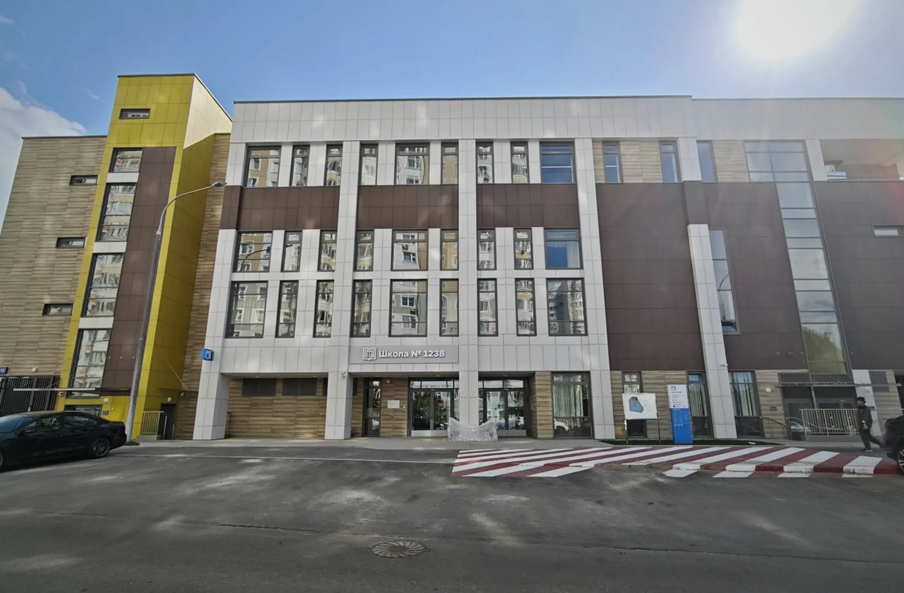

ФКР Москвы
Работа на 21 объекте комплексного ремонта: фасады, кровли, отделка, водоснабжение, канализация, теплоснабжение и электроснабжение.
Реализованные проекты
Избранные проекты: социальные объекты, инженерная инфраструктура, реставрация и жилая застройка. В каждом — работа на стыке технических решений, сроков, финансов, документации и взаимодействия с заказчиком.
Социальный объект · 2026
Формирование команды, календарных графиков и финансового плана, взаимодействие с заказчиком, подрядчиками и городскими службами.

Инженерные сети
Строительство сетей водоснабжения, хозяйственно-бытовой и ливневой канализации, ЛОС и КНС.

Реставрация
Техническое и финансовое сопровождение договорной работы, строительно-реставрационных процессов и документации.

Жилой комплекс
Управление проектом застройки: проектирование, строительно-монтажные работы, пусконаладка и передача управляющей компании.

Другие проекты
Работа на 21 объекте комплексного ремонта: фасады, кровли, отделка, водоснабжение, канализация, теплоснабжение и электроснабжение.
Рабочая группа по подготовке проектно-сметной документации для Алабяно-Балтийского, Волоколамского и Ленинградского тоннелей: инженерные системы и безопасность.
Реконструкция исторического здания: усиление несущих конструкций, металлоконструкции и инженерные решения.
Проектно-сметная документация, кабельные инженерные сети, графики, сметно-договорная работа, согласования, сдача и передача объекта.
Очистные сооружения, оборудование и строительно-монтажные работы.
Работы по отоплению, кондиционированию, водоснабжению и канализации.
Нужен разбор похожей задачи до того, как она стала критической?
Опишите объект и ситуацию. Важно не количество документов, а ясность вопроса, на который требуется ответ.